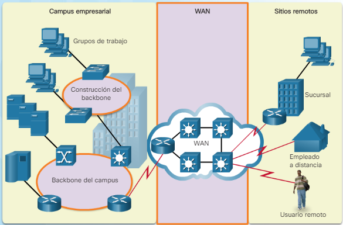

8.1 Descripción general de las tecnologías WAN.
< 8.1.1 Tecnologías WAN: Descripción general.
Una red de área extensa se describe como una red de datos que cubre una distancia geográfica relativamente amplia. A diferencia de la LAN, que normalmente se localiza en un área relativamente pequeña, como una oficina, un edificio o un campus pequeño. Una wan cubre distancias de unos pocos a miles de kilóometros. 
De forma normal, las tecnologías WAN pertenecen al proveedor de servicios (también llamado ISP) con el que se contrata los servicios de sus redes.
Las wan pueden tener diferentes formas físicas, el proveedor puede tener redes cableadas, de satelite, de movil... las implementaciones más comunes son:
- Punto a punto: la simple conexion entre dos dispositivos. Esta implementacion los dos dispositivos
funcionan como receptor y emisor de datos entre pares (no confundir por peer-to-peer).
Generalmente se utilizan lineas dedicadas alquiladas.
- De estrella: varios dispositivos conectados punto a punto. La version punto a punto seria muy costosa en este caso por lo
que se usa normalmente una conexion radial por donde varios dispositivos pueden acceder a la misma interfaz de otro dispositivo.
- Malla completa: usando la topologia radial, cada dispositivo tendria una interfaz radial en direccion a los demas dispositivos formando una malla
- De seguridad preventiva doble: este caso se usa para aumentar la seguridad de los datos usando ,por ejemplo, dos dispositivos radiales a los que le llegara
la misma informacion teniendo una redundancia. Si no les llega la misma informacion es que ha sido alterada.
 La infraestructura WAN puede ser de propiedad privada o arrendada como un servicio de un proveedor de servicios de terceros, como una compañía de telecomunicaciones, un proveedor de servicios de Internet, un operador de red IP privada o una compañía de cable. El servicio en sí puede operar a través de una conexión dedicada y privada, a menudo respaldada por un acuerdo de nivel de servicio, o sobre un medio público compartido como Internet. Las WANs híbridas emplean una combinación de servicios de red privada y pública.
Las principales compañías que se ubican en españa y son proveedoras de WAN son:
La infraestructura WAN puede ser de propiedad privada o arrendada como un servicio de un proveedor de servicios de terceros, como una compañía de telecomunicaciones, un proveedor de servicios de Internet, un operador de red IP privada o una compañía de cable. El servicio en sí puede operar a través de una conexión dedicada y privada, a menudo respaldada por un acuerdo de nivel de servicio, o sobre un medio público compartido como Internet. Las WANs híbridas emplean una combinación de servicios de red privada y pública.
Las principales compañías que se ubican en españa y son proveedoras de WAN son:
| Nombre | Características | Ubicación |
|---|---|---|
| Distribuidora De Redes Wan Lan De Comunicaciones S.L | Una Empresa que se dedica a la Comercializacion instalacion mantenimiento, reparacion y prestacion de servicios relacionados con todo tipo de productos electronicos e informaticos y con proyectos de ingenieria de sistemas electronicos e informaticos. | Madrid |
| Tv Wan Iberia S.L | Empresa que se dedica a los Servicios de telecomunicaciones, a traves de redes mundiales telematicas, servicios de difusion audiovisual.servicios de asistencia a la direccion de negocios comerciales e industriales, de publicidad, etc | Barcelona |
| Lan to Wan Services SI | Empresas de Redes Informáticas Madrid. Instalacion y diseño de Redes inalambricas, Wireless, Wimax, WIFI. Configuracion de Router, Switch, Fiewall, ASA, Cisco, Zyxel, Dlink, Netgear, comunidades, edificios, comunitaria. | Madrid/td> |